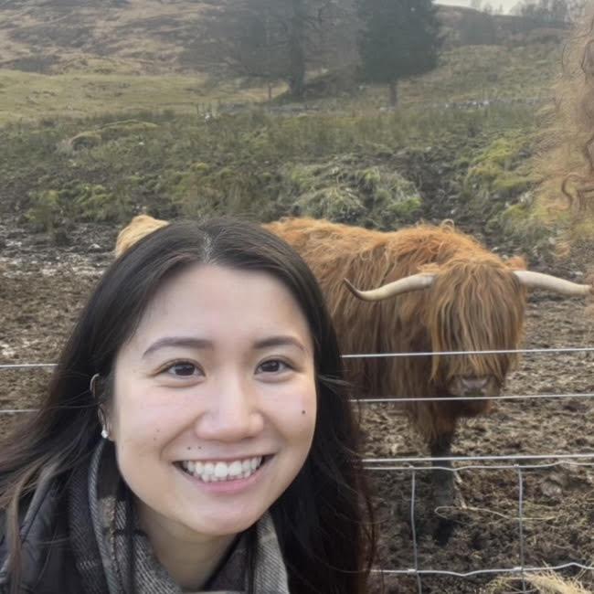

Welcome to my website!
I am an incoming Ph.D. student in cognitive science at NYU, where I am primarily advised by Bob Rehder in the Concepts & Causality Lab.
My research takes two main directions:
- I quantify and give formal structure to mental attitude concepts like intentionality, abstraction, etc. to study how such concepts decompose and recompose to give language meaning. [1]
- I design pipelines for scaling the generation of experimental language stimuli using large language models, which improves the efficiency of the scientific process and the coverage of our conclusions. [2]
Outside of research, I enjoy hot yoga, hiking, and restoring vintage clothing.
Contact me by reordering the following strings:
"nyu.", "ayc8004", "@", "edu"